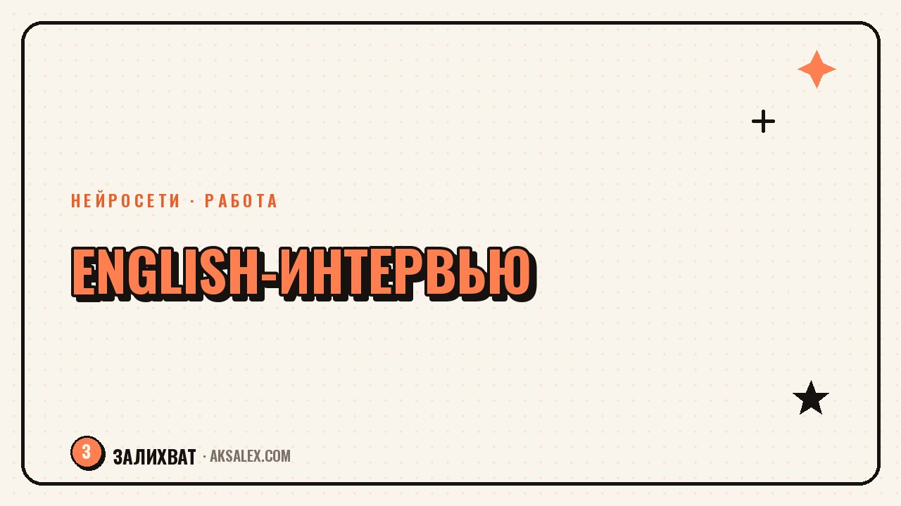

Нейросети для собеседования на английском: подготовка

Собеседование на английском пугает даже тех, кто неплохо знает язык: волнение сбивает грамматику, нужные слова теряются, а привычные фразы из учебника звучат заученно. Нейросети не заменят практику живого разговора, но дают то, чего не хватает большинству кандидатов - безопасное пространство для репетиции, где можно ошибаться сколько угодно раз и без последствий для реального интервью.
Почему собеседование на английском - это другой навык
Знать язык и уверенно говорить на нём под давлением - разные вещи. На собеседовании добавляется стресс и необходимость думать одновременно о содержании ответа и о его форме. Поэтому даже уровня upper-intermediate иногда не хватает, чтобы собраться и внятно рассказать о своём опыте.
Нейросеть помогает тренировать именно этот навык - говорить по делу и быстро, без долгих пауз на подбор слов. Чем больше раз ты проговорил похожую ситуацию, тем спокойнее реагируешь на похожий вопрос в реальном разговоре.
Собеседование на английском - это не экзамен по грамматике, а разговор. Нейросеть помогает натренировать разговор, а не выучить правила заново.
Как отрепетировать типичные вопросы с чат-ботом
Ролевая игра с нейросетью
Попроси чат-бот сыграть роль интервьюера на позицию, которую ты рассматриваешь, и задавать вопросы по очереди, дожидаясь твоего ответа. После каждого ответа проси короткий фидбек: что было понятно, какие слова заменить, где лучше короче. Такой формат похож на реальный разговор больше, чем список вопросов для чтения.
- Tell me about yourself - базовый вопрос, который стоит отработать первым
- Why do you want to work here - нужен конкретный, а не общий ответ
- Tell me about a time you failed - структура STAR помогает не растеряться
- What are your strengths and weaknesses - готовь честный, но уместный пример
- Do you have any questions for us - заготовь 2-3 вопроса заранее
После нескольких прогонов попроси нейросеть ужесточить роль: пусть интервьюер перебивает, задаёт уточняющие вопросы или ведёт себя сухо. Это тренирует устойчивость к неудобным ситуациям лучше, чем мягкий дружелюбный диалог.
Лексика и грамматика под конкретную профессию
Общий английский и профессиональный словарь - разные наборы слов. Если ты идёшь на интервью в IT, маркетинг или финансы, попроси нейросеть собрать список терминов и фраз для этой сферы с переводом и примерами использования в предложении.
Полезно попросить переписать твой рассказ о проекте естественным языком - без канцеляризмов и сложных конструкций, которые запутают в разговоре. Нейросеть подскажет синонимы там, где ты используешь редкие слова только потому, что выучил их по учебнику.
Разбор ответов по методу STAR
Метод STAR (Situation, Task, Action, Result) - стандартный способ рассказать о рабочей ситуации коротко и по делу. На английском он особенно полезен, потому что задаёт чёткую структуру и не даёт уйти в путаный пересказ без начала и конца.
| Этап STAR | Что рассказать | Частая ошибка |
|---|---|---|
| Situation | Контекст: где, когда, с какой задачей | Слишком длинное вступление без сути |
| Task | Что конкретно требовалось сделать | Путают с Situation, повторяют одно и то же |
| Action | Что сделал именно ты, какие шаги | Говорят «мы», не показывая свой вклад |
| Result | Что получилось, желательно с цифрой или фактом | Забывают результат, обрывают рассказ на действии |
Напиши 3-4 истории из опыта на русском, попроси нейросеть разложить их по STAR и перевести на английский с естественными связками между частями. Выучи не текст целиком, а опорные фразы - так рассказ прозвучит живо, а не как зазубренный монолог.
Произношение и уверенность в звучании
Голосовые режимы в некоторых приложениях позволяют проговорить ответ вслух и получить замечания по произношению и темпу речи. Если такого режима нет, запиши голосовую заметку на телефон и попроси нейросеть расшифровать её и указать, какие слова прозвучали нечётко.
Отдельно отрепетируй паузы: пауза перед ответом звучит увереннее, чем слова-заполнители вроде «ммм». Нейросеть подскажет фразы для выигрыша времени на подумать - «let me think for a moment» звучит лучше тишины.
Что нейросеть не заменит перед интервью
Живой разговор с человеком непредсказуем, и чат-бот не воспроизведёт реальные паузы, акцент собеседника или неловкость момента, когда не услышал вопрос. Поэтому последний шаг подготовки - попросить друга или знакомого провести мок-интервью и посмотреть, как ощущения отличаются от репетиции с нейросетью.
Используй ИИ для количества попыток, а живую практику - для качества ощущений перед настоящим собеседованием. Вместе это закрывает нехватку словаря и нехватку уверенности - две главные причины, почему собеседование на английском выбивает из колеи даже опытных специалистов.
Частые вопросы
Какая нейросеть лучше подходит для подготовки к собеседованию на английском?
Подойдёт любой крупный чат-бот с голосовым режимом или функцией диалога - важно, чтобы он мог играть роль интервьюера и давать обратную связь. Выбирай тот, с которым удобнее тебе печатать или говорить.
Сколько раз нужно прорепетировать вопросы перед интервью?
Универсального числа нет, но несколько прогонов по основным вопросам и 2-3 истории по методу STAR обычно снимают большую часть тревоги. Важнее регулярность за несколько дней, чем один долгий прогон перед сном.
Поможет ли нейросеть улучшить произношение на английском?
Она подскажет, какие слова звучат нечётко по записи голоса, и предложит вариант произношения, но живую артикуляцию лучше тренировать с преподавателем или носителем языка.
Как ответить на вопрос о слабых сторонах на английском, не завалив интервью?
Выбери честную, но не критичную для работы слабость и сразу добавь, что делаешь с ней. Нейросеть поможет подобрать нейтральную формулировку и проверить, не звучит ли ответ слишком самокритично.
Нужно ли учить ответы наизусть перед собеседованием на английском?
Лучше выучить структуру и опорные фразы, а не точный текст целиком - заученный монолог звучит неестественно и сбивается, если интервьюер задаёт уточняющий вопрос.
Раз тема оказалась полезной, вот что почитать следующим. Как нейросети помогают при разводе: документы, раздел имущества и переговоры без лишнего стресса.
Читать статью →а не вручную